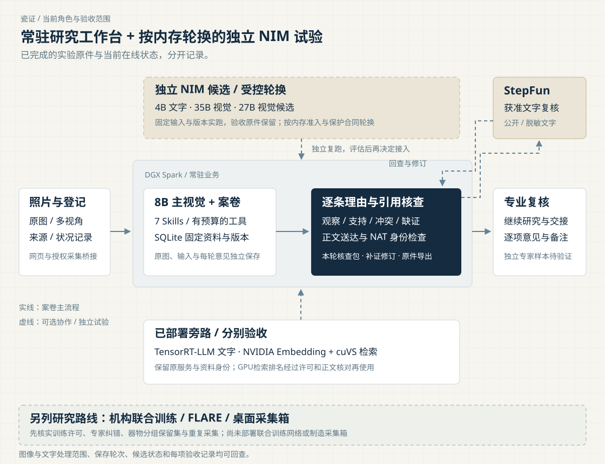
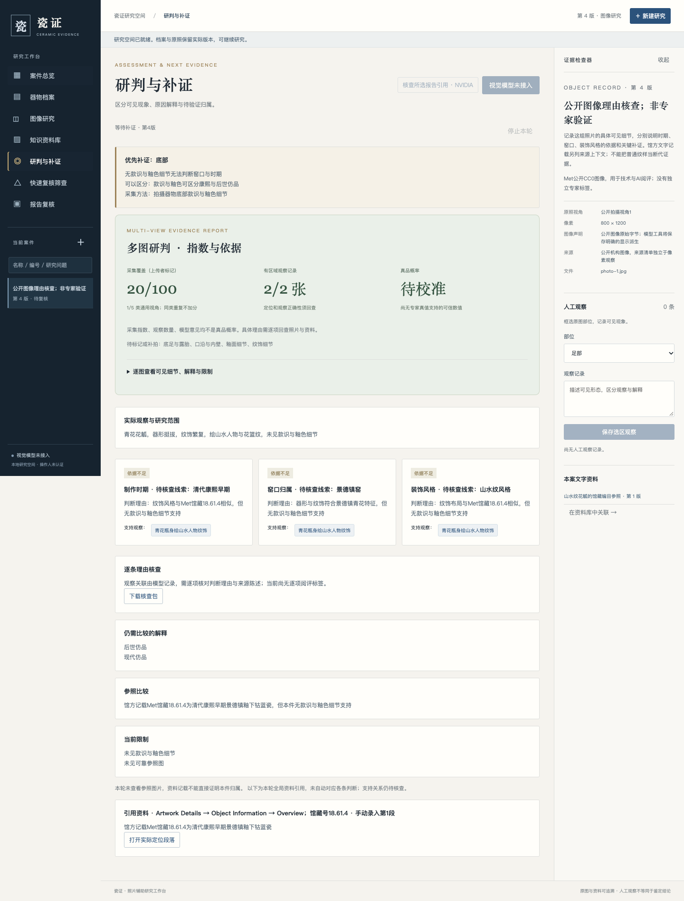
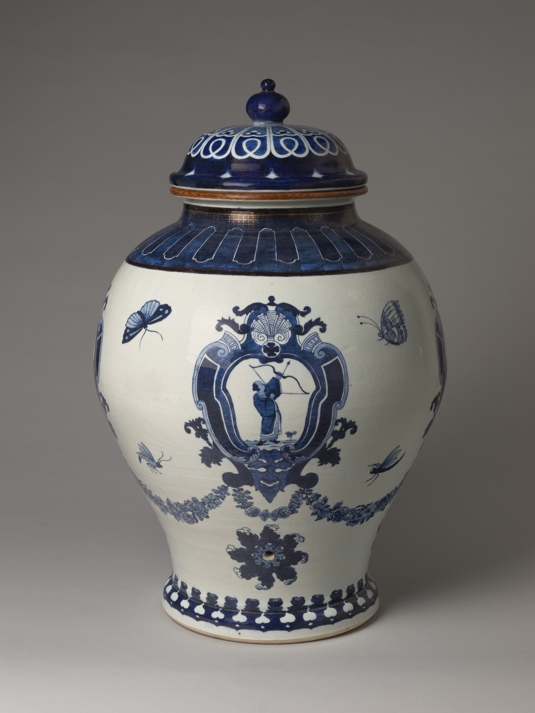
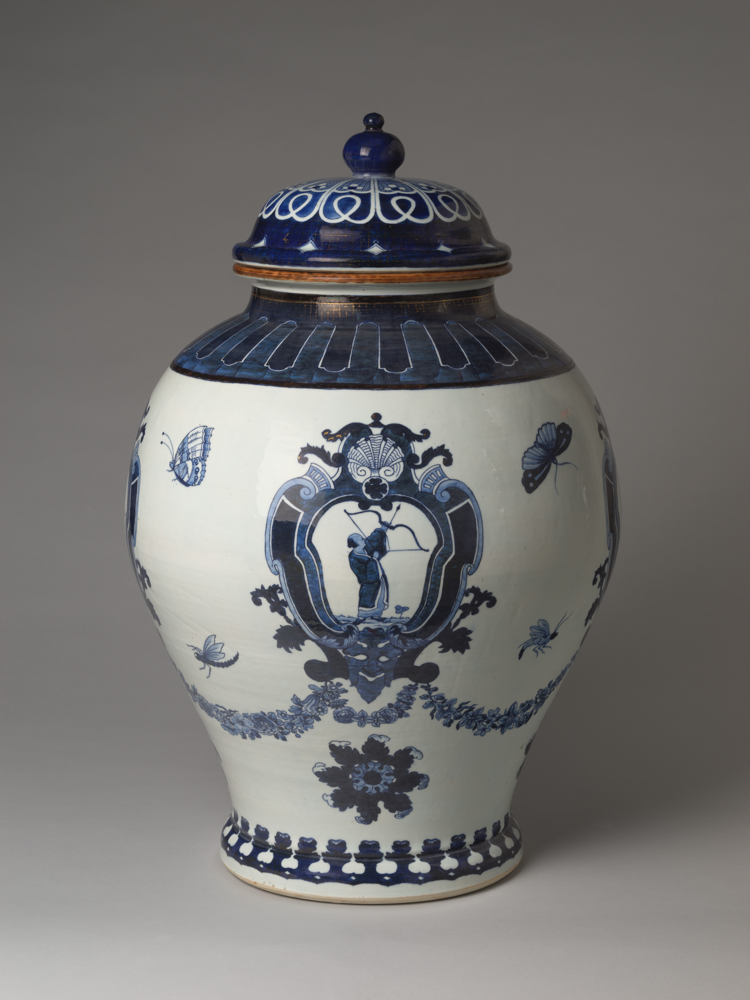
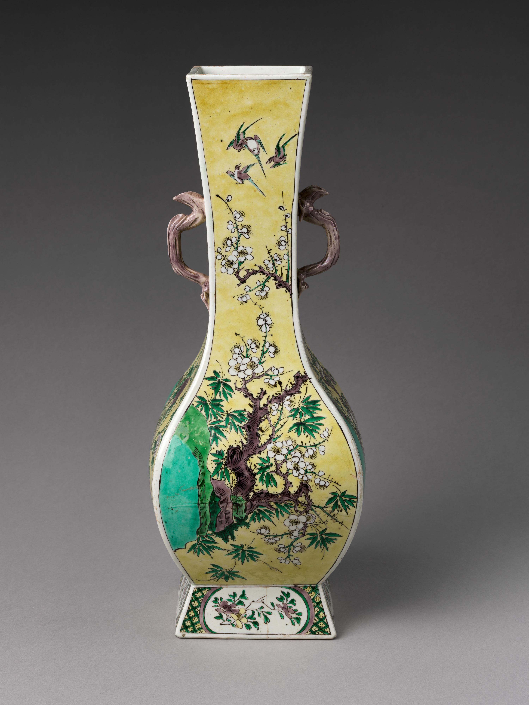
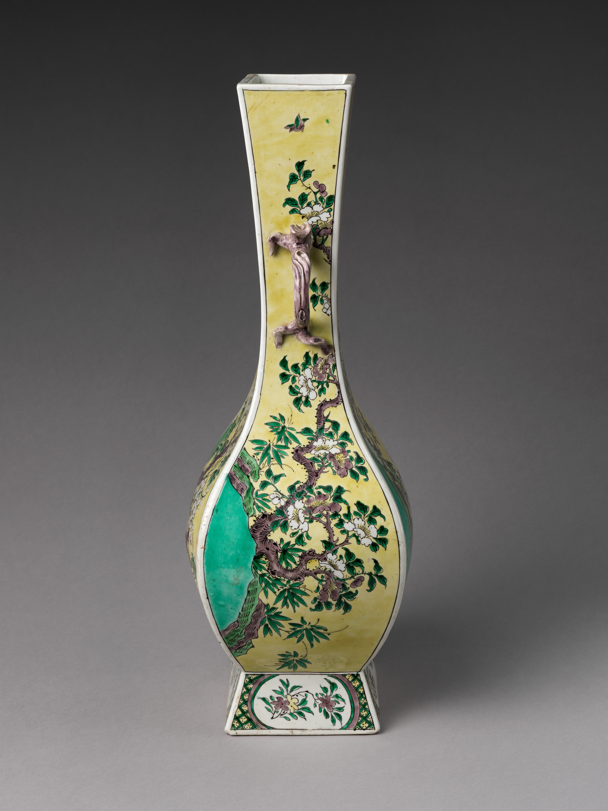
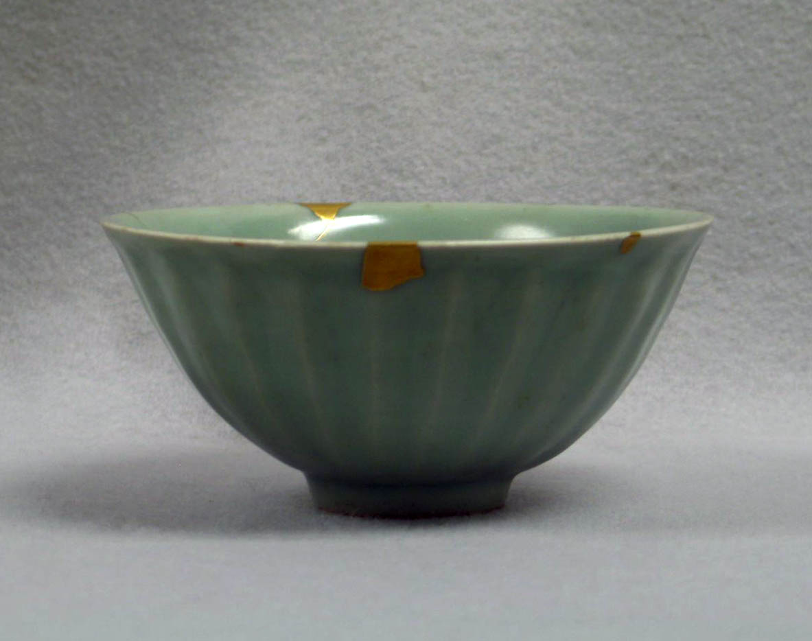
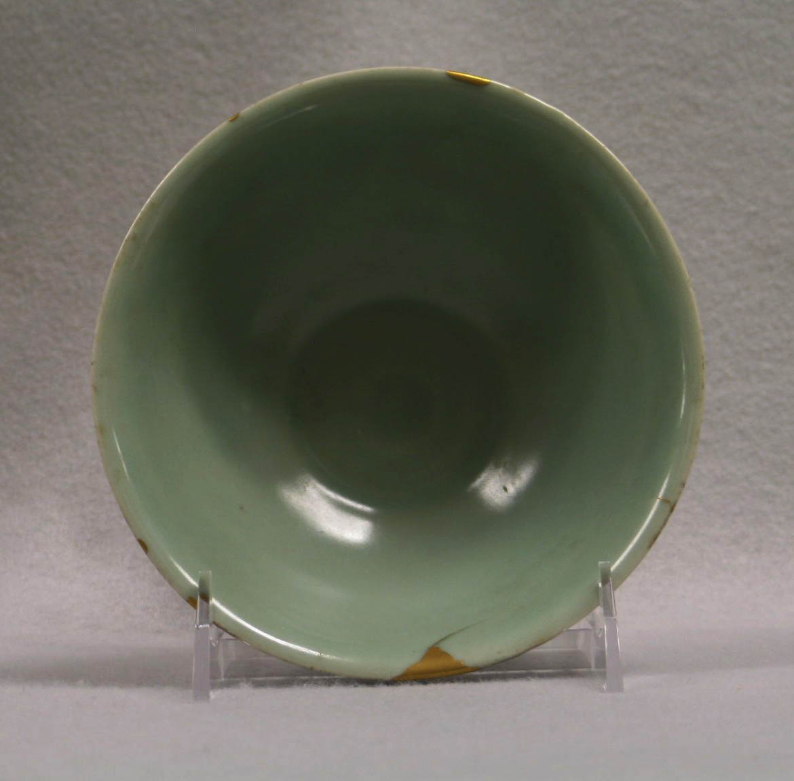

博物馆
编目与研究
分别记录馆方已有编目、照片中可见的特征，以及本次研究者提出的解释。意见能回到原图区域与资料段落，便于复核和后续补拍。
- 登记
- 观察
- 参照
- 复核
 瓷证瓷证 · 完整项目报告
瓷证瓷证 · 完整项目报告瓷证 / 陶瓷证据研究工作台
面向博物馆、收藏者与拍卖从业者的陶瓷研究 Agent。把实物照片、区域观察、资料出处与逐项理由连成案卷；找到矛盾，提出补证，保存每一次判断如何改变。


真实馆藏图像来自 The Met Open Access；公开教学使用已知身份材料。实际 AI 案卷与教学操作分别标识，原件可回查。
研究中的交接
器物研究常常散落在照片、目录、附件和口头判断里。瓷证把这些材料放回同一份案卷，保留原始文件、具体观察、资料出处、不同解释与意见变化。
博物馆
分别记录馆方已有编目、照片中可见的特征，以及本次研究者提出的解释。意见能回到原图区域与资料段落，便于复核和后续补拍。
收藏者
将器物、交易或传承说明、修复记录与原始附件关联。缺少的经历保持待核，不把没有材料支持的故事写成已证实来源。
拍卖从业者
区分描述、归属措辞与状况假说，检查每一句话依赖的材料。交接时同时带走报告、原始附件及文件哈希清单。
这三种角色是产品场景和教学设计，不代表已发生的机构委托、收藏交易或拍卖采用。三套公开案卷使用已知身份的真实馆藏照片；研究示例由项目编写。

架构 / 专业工作与本地计算
同一份案卷，连接多视角采集、本地视觉、可复用方法和固定资料。DGX Spark 为这条私有研究路径提供桌面级算力节点，让器物原图与机构材料在指定本地环境中处理。

GB10 的共享内存与 CUDA 环境承载常驻研究业务和按内存预算轮换的独立试验；运行保持原有内存保护合同，同一节点保留部署与性能分析记录。照片无需为每次研究发送到外部模型，模型与资料版本可以固定。
视觉模型读取真实像素，Skills 规定方法和下一步，Retriever 发现候选正文，案卷工具核对访问权限与来源。每项组件都有具体输入、输出和验收范围。
step-3.7-flash 已对批准文字进行真实反证审查，提出断代依据、窑口候选与风格支持问题。本地模型随后回查并保存修订版；两位模型角色的往返保留为可读记录。
NVIDIA NeMo Agent Toolkit 集成核对资料版本、段落、哈希和成功读取回执。正文真实存在与推断获得充分支持属于两层检查：前者由工具约束，后者由研究方法、反证审查与专业复核共同完成。
七个自研 Skills
每个方法包提供适用范围、工作步骤与参考材料，以描述 → 正文 → 按需资源渐进加载，整包 SHA 固定实际版本。宿主约束权限、工具执行、读取回执和预算；不替模型选择引用或写出结论。
先确认研究任务、输入覆盖和缺失视角，再安排后续观察或补证。照片没拍到的部位不能默认为没有问题。
分开基本档案、实际照片观察与资料记载。研究意见保留依据、限制和需要人工复核的事项。
从器形、纹饰和工艺线索提出竞争解释，分别找支持、冲突与缺项。相近的风格不能直接转成同年代、同窑口或真品结论。
把照片迹象与裂纹、磨损、修复等假说分开，保留摄影、反光和污染等竞争解释。不能仅凭照片证明没有修复。
核对来源事件、记录时间、同器联系和原始附件，将证据断点与待核事项单独保留；有一个名字不等于已经证明一条传承链。
只读取本案许可文字与固定资料段落，把相符、冲突和缺失写回案卷。文字真实性与实物归属需另行核验。
比较新旧依据，对每一条反证保留裁决和理由；新版本解释改变了什么，也保留失败与未解决项。
保存案例的初稿加载前三个包，修订再加载第七个包。方法包帮助 Agent 决定步骤与补证；后续将以独立专家样本比较有 / 无 Skills 的实际研究效果。
快速筛查 / 可解释的工作优先级
“一眼不对”的器物，往往存在可具体指出的冲突。系统优先查找制作时期、窑口、装饰风格、来源、状况与采集记录之间的矛盾；每一项提示都保留依据与下一步建议。
规则示例 / 数值与理由
同一案卷的两份高度记载分别为 300–301 mm 与 350–351 mm，并各自绑定原件。系统标记“采集与测量记录冲突”，提示核对单位、量测条件和是否同器，而不是直接将器物判为赝品。
示例用于解释固定公式；实际分数以本案可读取记录为输入。底部缺图、没有款识或资料未读都属于“未知”，不当作无风险。
| 六个固定维度 | 权重 | 可追溯触发依据 |
|---|---|---|
| 制作时期 | 20 | 本案已登记制作区间之间的冲突；报告所列实际观察与依据 |
| 窑口归属 / 装饰风格 | 15 / 15 | 逐项读取终版报告及其观察引用，保留其专业复核状态 |
| 来源对应 | 20 | 同一编号体系内的不同器物标识，或来源事件早于制作区间 |
| 状况与修复 | 15 | 本案状况记录、检查条件和相应证据，材料缺失记为未知 |
| 采集完整性 | 15 | 高度区间不相交、原件哈希不符及采集覆盖缺口 |
总权重固定为 100，每维冲突最多计一次。矛盾指数 = 冲突权重；复核优先指数 = 冲突权重 + 0.5 × 未知权重；已评覆盖 = 已评价权重 / 100。当全部维度未知时，矛盾指数不出值，复核优先指数的 50 仅表示待补材料，不用于给出鉴定结论。低指数也不能推定真品；真实概率留待专家真值、代表性样本与独立校准。
Laya / Jev 的合理位置。Laya 的 typed choice / score 可用于文字任务路由或矛盾分流的影子评估；其模型概率不是文物真品概率。Jev 是浏览器操作 Agent，更适合日后整理获准访问的公开馆藏目录。当前快速筛查使用可解释规则；保留离线 Laya 适配入口，未将未验证模型当作判断依据。
从原件到意见的五个连接
可回查意味着原件不被解释替代，资料不被新版本悄悄覆盖，观点也不因重新导出就失去当时依据。
专业工作台新增完整的本轮理由核查包。支持与冲突观察可点回原图区域；“待核查线索”保留候选与模型原理由；资料引用保持全局展示，打开固定正文后再核对它支持了哪一句记载或推断。
下载包绑定选定轮次、本案版本和审核包哈希，汇集图像身份、可见描述、判断主张、观察关系、实际送达的许可正文与空白阅评模板。冻结快照、段落归属、许可和准确送达校验一致后才导出正文；未阅评项目保持待核查，语义分数为空。
看两张输入原图与区域 · 看历史候选与模型原理由 · 亲手定位图片和资料的教学案 · 核查协议与下载接口 · 本轮真实 Spark 工作流原件

第 12 轮初稿和修订各读取同一段固定正文，并各保存一条 source_context 引用，NAT 为 references_verified。六项文档 / 段落 / 版本身份与读取回执一致，但这仍不是语义支持审查：初稿实际存在同器来源身份错误，详见第十一章的专业验证说明。
原始 JSON、Markdown 和 HTML 报告保留在私有记录；公开证据发布安全副本、逐文件原件与公开 SHA、导出回执及只读 audit。报告可能内嵌原图，公开证据不复制原图 base64、凭证、私有地址、SSH 身份或原始 nsys。
下列身份来自第 12 轮历史记录。新版核查发现其公开回放包的冻结快照整体承诺与正文重算不一致，保留诊断并禁止把该包正文用于新的支持评分；历史意见与当时的核查状态保持原样。新轮次的完整核查包与版本记录见上方入口。
实际模型观察
本案采用 Met 馆藏号 18.61.4 的两个公开视角，系统已知它们属于同件器物。图像、问题和固定资料通过实际服务进入实际研究记录；以下“模型原话”摘自保存的观察和报告，未替模型补写专业判断。
区域框按模型保存的原图归一化坐标展示，是可复查的定位结果，尚未由专家确认观察准确性。“花觚”来自馆方编目；模型在原始文本中使用“瓷瓶”等称呼，本报告保留这种差异。
初稿 AI 区域修订新增区域[0.22, 0.17, 0.78, 0.83]；原记录 limitation 为空，这不表示没有观察局限。初稿 AI 区域[0.22, 0.17, 0.78, 0.83]；“花篮”是模型用词，不是专家判定。项目编辑说明 修订保留两条原有观察，并新增：“青花山水纹饰对称布局”，解释为“山水纹饰布局对称”，区域 [0.35, 0.35, 0.65, 0.65]。定位、措辞与语义准确性需要分别审查；实际运行成功不将这些描述自动转成专业事实。
Met馆藏18.61.4是一件山水纹花觚，页面记录为清代康熙早期的景德镇釉下钴蓝瓷，尺寸为高48.3厘米、直径23.2厘米，购藏记录为Rogers Fund, 1918。系统分别保存馆方记录、实际图像观察和尚待核查的问题；这些标签不得自动赋给其它外观相似器物。
这是实际入库并送达模型的项目摘要，原资料机构为 Met；摘要仍待专家复核，不冒充馆方解释性长文。馆方归属只针对已知馆藏，不是未知器物的通用断代规则。
查看馆方原始对象页 ↗ · 查看实际资料副本 ↗真实初稿与本地修订
初稿和修订都没有给出确证断代或真伪结论。本章保留第 12 轮的候选、理由与依据，引号内是模型原话，编辑说明单独标注；本轮新增的理由核查和候选运行分别见逐条核查入口与部署记录。
候选：“康熙早期”
理由：“馆方记录提及康熙早期，但无实物佐证”
候选：“康熙早期”
理由：“馆方记录提及康熙早期，但无实物证据支持”
项目编辑说明：已知馆藏的编目记录与独立实物断代是不同层次。山水纹饰观察能被定位，但不能独自证明制作时期；修订的支持关系尚未通过专家核验。
候选：“景德镇”
理由：“无款识或胎体证据支持窑口”
候选：“景德镇窑”
理由：“无款识或胎体证据支持窑口”
项目编辑说明：模型保持证据不足，没有补出款识、胎体检查或参照照片。资料里记载的产地属于馆方编目上下文，不代表本系统完成了独立窑口验证。
候选：“山水花篮纹饰风格”
理由：“纹饰布局符合清代早期特征”
候选：“山水纹饰风格”
理由：“装饰布局对称，符合清代风格”
项目编辑说明：“对称”到“清代风格”的推理仍缺可定位标准器比较、具体区分特征和竞争解释验证。原始判断完整保留，不能把一条关联观察当成专业支持充分。
“依据当前图像与资料，制作时期、窑口、风格均不足”
原记录限制：“无参照图支持断代”“无款识或胎体证据”“未完成实物检测”。列有“后世仿品”“现代仿品”两个竞争解释，但未完成其专业比较验证。
“基于当前图像与资料，无法确认制作时期、窑口与风格”
修订要求“拍摄器物款识、胎体及釉面细节”，理由为“无款识或胎体证据支持窑口与时期”。这是模型的补证请求，不是已完成的实物检查或鉴定。
真实文字审查与逐项回应
实际 StepFun step-3.7-flash 一次批准文字请求成功，耗时 10.635108 秒：818 prompt + 1,707 completion = 2,525 tokens，cached 256 已包含在 prompt 内。下列审查意见与本地修订裁决都来自保存记录。
“康熙早期断代主张无实物佐证，未提供对应引用依据”
实际理由：“需实物检测确认款识与胎体”
项目编辑说明：理由保留了需实物检测的限制，但尚未逐项解释现有来源与观察如何支持或不能支持年代候选。
“景德镇窑口主张无款识、胎体等证据支持，未提供对应引用依据”
实际理由：“需实物检测确认胎体”
项目编辑说明：没有发生实际胎体检测，不能把该理由写成检测结论；馆方编目与独立窑口判定仍须分开。
“山水花篮纹饰风格主张无具体特征比对依据，仅笼统符合清代早期特征”
实际理由：“需实物检测确认釉面”
项目编辑说明：这一理由与“具体风格比对依据不足”的对应性仍薄弱。未解决不等于已经充分回应，需专业复核。
StepFun 没有看到原图，返回的限制包含“未查看待审器物原图，无法核验实物特征”。它还把当前来源说成“同类型馆藏编目”，虽然输入实际上是身份已知的同件馆藏。外部审查文本也必须复核，不能被当成专家真值。
它建议补充款识、胎釉检测报告，以及同类型标准比对资料；这些建议尚未实际采集。三个疑点的引用 ID 均为空，批准包的一条来源上下文引用不自动成为各主张的支持。
采集 / 从网页走向现场
专业工作发生在库房、看货现场与采集台。统一采集接口将设备照片绑定到器物、案卷和采集批次，保留原件与元数据，让现场材料能够直接进入后续研究。
创建采集会话，上传有界 multipart 照片，记录视角、设备来源及检查元数据。继承案卷权限、原件哈希和数量预算；重复传输可追溯。提供可运行客户端，公开实物照片已用于实际接口验证。
预留通用来源类别与设备元数据。后续可与雷鸟、阿里、蚂蚁、乐奇等设备的合法 SDK 或导出流程适配；先做采集桥接，再做厂商认证，不把通用接口称为已完成品牌对接。
硬件方案属于联合设计路线，尚未制造或标定。XRF、热释光或其他专业检验不属于当前已部署功能。照明与接触方式需纳入机构文保流程。
拟固定灯光、曝光、色卡、尺规和相机位置，对同一器物进行同条件重复采集；核对颜色、尺度与同一部位能否对应。校验帧、原图和衍生图分别留档，照片才能成为跨时间可比较的研究材料。
研究交付物为采集清单、重复性结果、缺失部位及原件哈希。现有采集桥接可以接收获准照片；实物箱体、相机控制与标定仍需原型验证。查看受控采集与机构训练研究路线。
学习路线 / 有审查的持续改进
现有案卷保留观察、理由、反例、补证与冻结正文，供逐项审核。后续研究先把获准的专家订正变成可审查材料，再分别验证采集、方法和模型候选；研究候选通过独立验证后，再决定是否发布。
保留原图、逐条理由、冻结正文与人工备注。未来专家订正需指明错误区域、过度推断、资料不支持和下一项检查，核实身份、依据及训练用途后再形成审核材料。
同器物的全貌、局部和重复采集放在同一组，独立标签留在评审侧。比较观察、引用、理由、反例和补证价值，分开验证采集条件、方法与模型的实际作用。
拟先研究审核材料上的离线文字微调，以保留集验证可重复性；再用获准材料模拟NVIDIA FLARE多站点。真实机构保留原图与标签，只交换获准更新，另验收授权、隐私与逐机构表现。
拟议顺序为：用途授权 → 专家订正审核 → 器物分组与冻结保留集 → 离线训练 → 独立评阅 → 候选发布与回滚。偏好与奖励模型须另测与专业评阅的一致性，之后再研究NeMo RL后训练；当前未训练这些模型，也未运行联合训练网络。
NVIDIA FLARE 是可用于多机构联邦学习的开源框架；NeMo RL 提供语言与多模态模型后训练能力。上述是工程研究路线，并非已经完成博物馆合作训练。本轮研究方案列出专家纠错审核、机构训练授权、器物分组保留集和采集箱重复性验证。参考：NVIDIA FLARE 官方文档 · NeMo RL 官方文档 · Laya 原仓库 · Jev 原仓库。
专业验证 / 从研究案卷到专家样本
专业质量验证是项目下一阶段的重点：将博物馆与拍卖业务中的授权样本纳入独立评审，核对系统看到了什么、引用是否支持推断，以及补证建议是否有用。
登记器物身份、权利、拍摄条件与检查原件；专家独立填写年代、窑口、状况与疑点。研究输入与答案映射分别保存，避免已知馆藏答案泄漏被当作未知器物识别效果。
观察必须能回到像素；出处必须能回到正文；判断理由必须说明证据如何支持或冲突。将恰当不确定性、补拍价值和复核用时纳入评价，而不只统计最终标签。
固定照片、资料与预算，比较模型大小、Skills、检索和反证审查。升级以真实器物流程和专家反馈为依据；更多参数和更多框架不自动带来更好的结果。
当前复核优先指数有确定公式，用于排序。未来如需真伪概率，应明确鉴定问题、独立专家真值、代表性样本和误差范围，经过保留集校准后再提供相应概率。
公开馆藏 / 观察、引用、判断理由
三件新纳入核查的公开馆藏，覆盖外销设计、仿古器形和修补状况。固定照片先运行，再提供同件馆藏文字；把模型原句、资料原值和核查备注放在一起，便于发现哪些描述需要澄清、哪些理由还缺依据。
三件各运行普通提示和Skills流程，合计六轮。首轮不提供馆藏标签、知识正文或图像参照，两组使用相同主视觉、图片权限、协调器预备和结论合同；Skills组额外读取方法包。
六轮全部保存后，再为三件各加入一份馆方基础记录，合计三轮。这个阶段明确给定答案，检查来源范围、引用及理由；不作为照片独立鉴定测验。
另有未接收标签和目标输出的先行AI看图记录、匿名模式的AI核查，以及一次StepFun公开文字反证。核查备注标明角色，原模型意见保持原样。
下面的中文说明为项目AI核查，馆方记录和模型原文分别标识。真人专家验证、专业准确率及概率校准仍列为后续工作。三件都是已知身份馆藏，未纳入经确认的现代赝品。
公开馆藏 / 2021.321a, b
馆方记载：清代，约1740年。景德镇釉下钴蓝瓷。


原模型称盖罐，记录了人物和蝴蝶；先行照片记录及后续AI核查指出下腹圆孔未被记录。公开名称为储水器，但不能拿后来揭示的名称代替原模型观察。
“西式盾形纹饰，非中国风格”为模型原文。西方设计背景可作装饰语境，不能据此排除中国制作；馆方字段记载景德镇。设计者、装饰风格、烧造地是不同问题。
阶段B实际读取了373字馆藏转录。首次采用馆方陈述但未附引用；修正后又触及无图像参照时的结论合同，运行停止，assessment保持null。
中文为项目译记，官方字段原值在原始记录中保留。馆方装饰设计归于 Cornelis Pronk；设计者不等于烧造者。两图主要为接近正面的视角，未提供外底。
公开馆藏 / 14.40.396
馆方记载：清代，18世纪晚期至19世纪。景德镇瓷，透明釉上多色珐琅彩绘。


黄地、花鸟、面棱及成对附件可见。“方形瓶身绘梅竹双禽”若指鸟数，首图上部可辨至少四个鸟形；若为纹饰名则需要解释。具体粉彩工艺、梅鹊物种尚不能由该馆方基本字段确定。
保存意见的理由写“无款识，纹饰非清代专有”。照片只说明没有提供底足视角，不能证明器物没有款识；补拍也不能单凭款识保证断代或窑口归属。
阶段B实际读取348字转录，馆方日期为late 18th–19th century。两次采用资料陈述却未附引用，运行停止，未保存正式研判；没有用馆方答案补写成功。
中文为项目译记。馆方保留年代区间，仿古铜器形描述造型，不代表铜材质，也不意味着现代赝品。两图未展示外底或足内。
公开馆藏 / 17.57.1
馆方记载：南宋，13世纪。龙泉青釉炻器；馆方记载金漆修补。


口沿黄色块及相连细线可见。模型将“金缮”写入可见事实；馆方只在基本字段记录gold lacquer repairs。该字段不独立证明具体技术、材料成分或修复年代。
阶段B形成等待补证记录，保存一条source_context引用，固定到本轮实际读取的337字段落、版本和哈希。该引用支持馆方转述，不是照片独立断代证据。
三项主张均为insufficient，但修订理由写“支持宋代龙泉窑归属，但需底部款识确认”。两种措辞存在强弱不一致；款识也不能被预设为独自确认归属的条件。完整原句保留，未改成已确认结论。
中文为项目译记。原字段为“Stoneware with celadon glaze (Longquan ware); gold lacquer repairs”。修补具体时间、材料成分和技术仍须另查；第二图展示碗内，不是外底。
StepFun / 实际文字协作
step-3.7-flash实际完成一次三件公开文字审查，15.400秒，未发送原图或图片地址。关于西式装饰的反馈留作范围澄清；另外两项“应引用馆方年代、窑口”的建议没有用于批评照片首轮，因为馆藏资料只是在审查时后来加入。来源上下文应在后续阶段分别核查。没有把外部建议自动改成主模型结论。
部署 / 平台实现与可复现交付
平台能力围绕业务使用：CUDA 读取器物照片，NAT 约束引用身份，向量检索发现资料，模型服务提供可替换推理接口。部署与主流程接入分别记录，便于复现和继续开发。
| 技术组件 | 业务职责与实际实现 | 接入范围 |
|---|---|---|
| DGX Spark / CUDA / Qwen3-VL-8B | 真实双图观察、逐项研究与修订；模型读取整图和有坐标的局部像素 | 案卷主流程视觉服务 |
| NVIDIA NIM / Qwen3.6-35B-A3B-NVFP4 | 官方 Spark ARM64 Model-Free NIM 加载固定 NVIDIA 官方 NVFP4 权重，已执行真实双图请求、完整案卷工作流及绑定 CUDA 执行片段 | 已完成8008独立候选试验；在线状态另记，8B主流程保持运行 |
| NVIDIA NeMo Agent Toolkit | 核对报告的固定资料版本、哈希、段落与成功读取回执 | 主流程报告引用核查 |
| NVIDIA NIM | 官方 Spark ARM64 Model-Free NIM / Qwen3-4B BF16；原厂入口、公开陶瓷文字请求与绑定 CUDA 执行核验 | 历史文字接口验收；首次27B保护停止后已恢复，后续按预算轮换 |
| TensorRT-LLM | 官方 ARM64 引擎组件 / Qwen3-4B BF16 文字服务；实际 HTTP 与 CUDA 轨迹 | 独立文字端点；PyTorch backend，非序列化 TRT engine |
| NVIDIA Embedding + cuVS | 官方 1B v2 / 2048 维 CUDA 向量索引；实际中文查询与身份、正文 SHA 核对 | 独立检索端点；主案卷仍保留 SQLite 路径 |
| StepFun · step-3.7-flash | 真实批准文字反证审查，保留疑点与本地修订记录 | 可选文字协作，不接收原图 |
| Nsight Systems / PyTorch Profiler | Nsight 采集双图视觉区间；独立 TensorRT-LLM 与 NIM 文字请求分别核对前八步 PyTorch / SGLang CUDA 轨迹 | 定位性能工作；不将单次轨迹当作整案提速 |
响应方式。研究任务先返回运行标识，再显示阶段进度；调用有预算与超时界限，历史版本和失败记录可回查。六维筛查使用本地规则先给可解释结果，完整视觉研究作为后续任务。升级推理引擎需在固定样本上重新测量整案延迟。
独立 NIM 服务。4B 文字服务保留原厂入口和原有请求 / CUDA 核验记录；新增 35B 视觉候选实际完成双图与完整案卷工作流。模型、配置、请求与输出分别留档，部署完成与理由质量分别核查。
模型选择。8B保持案卷主视觉职责，TensorRT-LLM文字与Embedding＋cuVS Retriever为已部署旁路。35B独立候选已停止，原验收记录保留；4B NIM在首次27B加载保护停止后按合同恢复，2026-09-29 09:22:53 UTC历史快照的五项服务均HTTP 200；该时间对应已公开回执。27B权重SHA与CPU检查、v11/v12保护停止及v13准入拒绝均有记录，后续已保存首轮双图工作流；GPU片段与恢复状态分别核查；32B 是尚未部署的纯文字候选。多模型取舍依据可用内存、上下文预算、真实观察和理由，不按 20B / 30B 参数档位推定准确率。
35B官方 NIM 独立候选使用固定 NVIDIA NVFP4 权重；35B首轮九份、27B首轮六份请求记录各自保留两张公开输入身份、意见与源码记录。27B原run的权重版本仍为unverified，固定checkpoint绑定不由模型名替代。35B另有绑定双图请求与候选进程的 8 步 CUDA 片段，原始轨迹已逐事件重计。候选端点按内存预算轮换，已完成实验与当前在线状态分别记录。理由核查接口和界面已切换实际后端，20 个既有案件保持；候选未替换 8B 主视觉。
查看35B绑定请求的 GPU 执行核查 · 查看8B与35B原件与 SHA 索引 · 35B 首轮完整流程记录 · 27B首轮完整流程记录 · 模型选择、版本和耗时说明
交付 / 阅读、操作与体验
作品以开源项目、可操作工作台、图文报告与场景演示共同交付。三个已经提交的链接保持不变，内容随经过验证的实现更新。
完整教学体验
三套预置案卷无需上传材料。可编辑观察、定位证据、纳入补证、比较版本、填写复核并导出。
进入公开教学工作台 →场景演示
从博物馆编目、收藏交接与图录核查出发，展示证据研究的步骤与 Spark 本地计算价值。
观看完整 Demo ↗开发与部署
后端、界面、Skills、样本接入、部署脚本与评测协议可阅读和复现，模型配置独立保管。
查看开源仓库 ↗报告与纪实
网页与A4图文PDF呈现同版内容，包含本轮理由核查和候选运行；PDF继续使用已提交的固定文件名。开发纪实记录方法取舍、部署与业务设计。
下载完整报告 PDF ↓